[The Chicago Times]
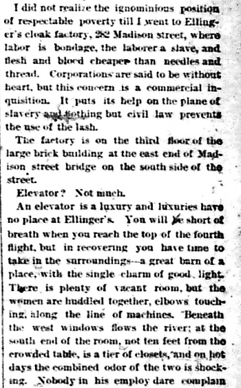
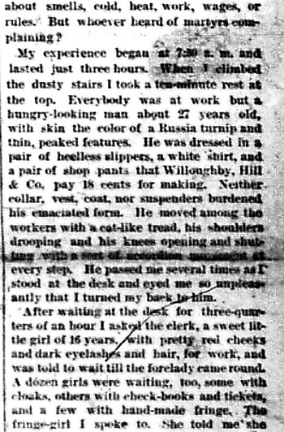
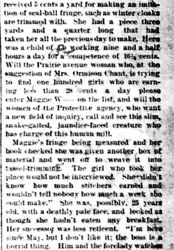
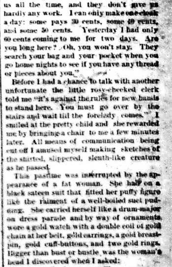
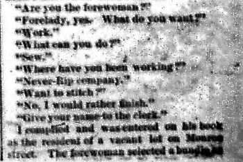
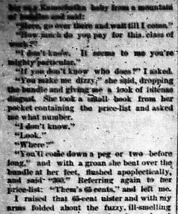
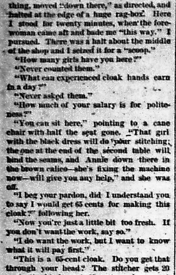
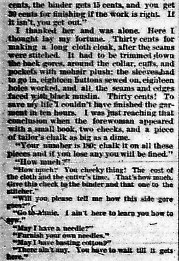
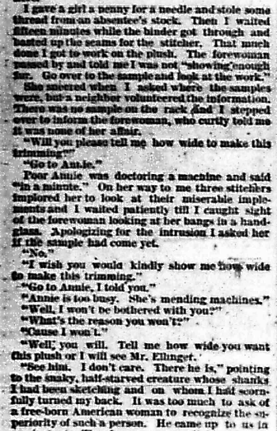
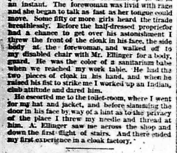
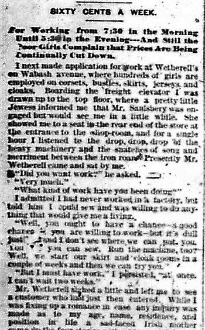
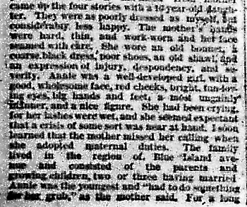
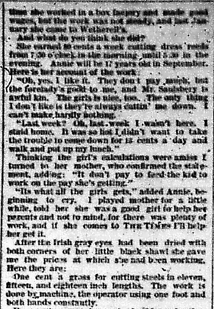
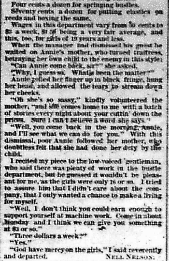
[The White Slave Girls of Chicago]
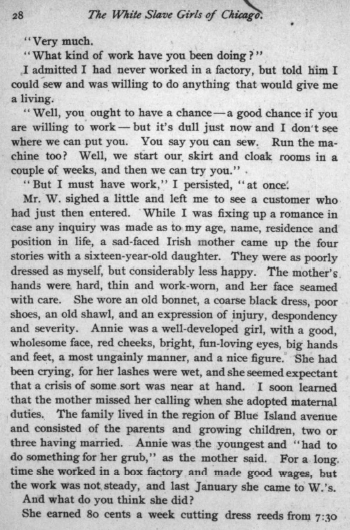
[The White Slaves of Free America]
[Editor Notes, Reading Text, & Supplementary Texts]
- Further Details of the Factory Investigation Conducted by "The Times" Lady Reporter.
- A Cloak Concern Where Nothing but Fear of the Law Seems to Prevent the Use of the Lash.
- A Sickly Child of Fifteen Compelled to Work Nine and a Half Hours for Sixteen Cents.
- The Unfortunate Insulted and Abused by Their Employer and Humiliated by the Forewoman.
- Eighty Cents a Week for Laboring from 7:30 in the Morning Until 5:30 in the Evening.
I did not realize the ignominious position of respectable poverty till I went to Ellinger's cloak factory, 282 Madison street , where labor is bondage, the laboror a slave, and flesh and blood cheaper than needles and thread. Corporations are said to be without heart, but this concern is a commercial inquisition. It puts its help on the plane of slavery, and nothing but civil law prevents the use of the lash.
The factory is on the third floor of the large brick building at the east end of Madison street bridge on the south side of the street.
Elevator? Not much.
An elevator is a luxury, and luxuries have no place at Ellinger's . You will be short of breath when you reach the top of the fourth flight, but in recovering you have time to take in the surroundings - a great barn of a place with a single charm of good light. There is plenty of vacant room, but the women are huddled together, elbows touching along the line of machines. Beneath the west windows flows the river; at the south end of the room, not ten feet from the crowded table, is a tier of closets, and on hot days the combined odor of the two is shocking. Nobody in his employ dare complain about smells, cold, heat, work, wages or rules. But whoever heard of martyrs complaining?
My experience began at 7:50 a.m. and lasted just three hours. When I climbed the dusty stairs I took a ten-minute rest at the top. Everybody was at work but a hungry-looking man about 27 years old, with skin the color of a Russia turnip and thin, peaked features. He was dressed in a pair of heel-less slippers, a white shirt, and a pair of shop pants that a clothing store pays 18 cents for making. Neither collar, vest, coat nor suspenders burdened his emaciated form. He moved among the workers with a cat-like tread, his shoulders drooping and his knees opening and shutting with a sort of accordion movement at every step. He passed me several times as I stood at the desk and eyed me so unpleasantly that I turned my back to him.
After waiting at the desk for three-quarters of an hour, I asked the clerk, a sweet little girl of 16 years, with pretty red cheeks and dark eyelashes and hair, for work, and was told to wait till the forelady came round. A dozen girls were waiting, too, some with cloaks, others with check-books and tickets, and a few with hand-made fringe. The fringe-girl I spoke to. She told me she received 5 cents a yard for making an imitation of seal-ball fringe, such as winter cloaks are trimmed with. She had a piece three yards and a quarter long that had taken her all the previous day to make. Here was a child of 15 working nine and a half hours a day for a competence of 16 1/4 cents. Will the Prairie avenue woman, who, at the suggestion of Mrs. Ormison Chant, is trying to find one hundred girls who are earning less than 28 cents a day please enter Maggie W--- on the list, and will the women of the Protective agency who want a new field of inquiry, call and see this slim, snake-gaited, jaundice-faced creature who has charge of this human mill.
Maggie's fringe being measured and her book checked, she was given another box of material and went off to weave it into tassel-trimming. The girl who took her place would not be interviewed. She didn't know how much stitchers earned and wouldn't tell how much a week she could make." She was, possibly, 25 years old, with a deathly pale face, and looked as if she hadn't eaten any breakfast. Her successor was less reticent. "I'm here since May, but I don't like it; the boss is a horrid thing. Him and the forelady watches us all the time, and they don't give us hardly any work. I can only make one cloak a day; some pays 30 cents, some 40 cents, and some 50 cents. Yesterday I had only 60 cents coming to me for two days. Are you long here? Oh, you won't stay. They search your bag and your pocket when you go home nights to see if you have any thread or pieces about you."
Before I had a chance to talk with another unfortunate the little rosy-cheeked clerk told me "it's against the rules for new hands to stand here. You must go over by the stairs and wait till the forelady comes." I smiled at the pretty child and she rewarded me by bringing a chair to me a few minutes later. All means of communication being cut off I amused myself making sketches of the shirted, slippered, sleuth-like creature as he passed.
This pastime was interrupted by the appearance of a fat woman. She had on a black sateen suit that fitted her puffy figure like the raiment of a well-boiled suet pudding. She carried herself like a drum major on a dress parade and by way of ornaments wore a gold watch with a double coil of gold chain at her belt, gold earrings, a gold breast pin, gold cuff-buttons and two gold rings. Bigger than bust or bustle was the woman's head I discovered when I asked:
"Are you the forewoman?"
"Forelady, yes. What do you want?"
"Work."
"What can you do?"
"Sew."
"Where have you been working?"
" Never-Rip company. "
"Want to stitch?"
"No, I would rather finish."
"Give your name to the clerk."
I complied and was entered on his book as the resident of a vacant lot on Monroe street. The forewoman selected a bundle as big as a Kamschatka baby from a mountain of bundles and said:
"Here, go over there and wait till I come."
"How much do you pay for this class of work?"
"I don't know. It seems to me you're mighty particular."
"If you don't know who does?" I asked.
"You make me dizzy," she said, dropping the bundle and giving me a look of intense disgust. She took a small book from her pocket containing the price-list and asked me what number.
"I don't know."
"Look."
"Where?"
"You'll come down a peg or two before long," and with a groan she bent over the bundle at her feet, flushed apoplectically and said "360." Referring again to her price-list: "Them's sixty-five cents," and left me.
I raised that 65-cent ulster, and with my arms folded about the fuzzy, ill-smelling thing, moved "down there," as directed, and halted at the edge of a huge rag-box. Here I stood for twenty minutes, when the forewoman came aft and bade me "this way." I pursued. There was a halt about the middle of the shop and I seized it for a "scoop."
"How many girls have you here?"
"Never counted them."
"What can experienced cloak hands earn in a day?"
"Never asked them."
"How much of your salary is for politeness?"
"You can sit here," pointing to a cane chair with half the seat gone. "That girl with the black dress will do your stitching; the one at the end of the second table will bind the seams, and Annie down there in brown calico - she's fixing the machine now - will give you any help," and she was off.
"I beg your pardon, did I understand you to say I would get sixty-five cents for making this cloak?" following her.
"Now your're just a little bit too fresh. If you don't want the work, say so."
"I do want the work, but I want to know what it will pay first."
"This is a 65-cent cloak. Do you get that through your head? The stitcher gets 20 cents, the binder gets 15 cents, and you get 30 cents for finishing if the work is right. If it isn't, you get out."
I thanked her and was alone. Here I thought lay my fortune. Thirty cents for making a long cloth cloak, after the seams were stitched. It had to be trimed down the back gores around the collar, cuffs, and pockets with mohair plush; the sleeves had to go in, eighteen buttons sewed on, eighteen holes worked, and all the seams and edges faced with black muslin. Thirty cents! To save my life I couldn't have finished the garment in ten hours. I was just reaching that conclusion when the forewoman appeared with a small book, two checks, and a piece of tailor's chalk as big as a dime.
"Your number is 180; chalk it on all these pieces and if you lose any you will be fined."
"How much?"
"How much? You cheeky thing! The cost of the cloth and the cutter's time. That's how much. Give this check to the binder and that one to the stitcher."
"Will you please tell me how this side gore goes?"
"Go to Annie. I ain't here to learn you how to sew."
"May I have a needle?"
"Furnish your own needles."
"May I have basting cotton?"
"There aint any. You have to wait till it gets here."
I gave a girl a penny for a needle and stole some thread from an absentee's stock. Then I waited fifteen minutes while the binder got through and basted up the seams for the stitcher. That much done I got to work on the plush. The forewoman passed by and told me I was not "showing enough fur. Go over to the sample and look at the work."
She sneered when I asked her where the samples were, but a neighbor volunteered the information. There was no sample on the rack and I stepped over to inform the forewoman, who curtly told me it was none of her affair.
"Will you please tell me how wide to make this trimming?"
"Go to Annie."
Poor Annie was doctoring a machine and said "in a minute." On her way to me three stitchers implored her to look at their miserable implements and I waited patiently till I caught sight of the forewoman looking at her bangs in a handglass. Apologizing for the intrusion I asked her if the sample had come yet.
"No."
"I wish you would kindly show me how wide to make this trimming."
"Go to Annie, I told you."
"Annie is too busy. She's mending machines."
"Well, I won't be bothered with you."
"What's the reason you won't?"
"Cause I won't"
"Well you will. Tell me how wide you want this plush or I will see Mr. Ellinger.
"See him. I don't care. There he is," pointing to the snaky, half-starved creature whose shanks I had been sketching and on whom I had scornfully turned my back. It was too much to ask of a free-born American woman to recognize the superiority of such a person. He came up to us in an instant. The forewoman was livid with rage and she began to talk as fast as her tongue could move. Some fifty or more girls heard the tirade breathlessly. Before the half-dressed proprietor had a chance to get over his astonishment I threw the front of the cloak at his face, the side body at the forewoman, and walked off to my disabled chair with Mr. Ellinger for a bodyguard. He was the color of a sanitarium babe when we reached my work table. He had the two pieces of cloak in his hand, and when he raised his fist to strike me I worked up an Indian-club attitude and dared him.
He escorted me to the toilet-room, where I went for my hat and jacket, and before slamming the door in his face by way of a hint as to the privacy of the place I threw my needle and thread at him. A. Ellinger saw me across the shop and down the first flight of stairs. And there ended my first experience in a cloak factory.
- SIXTY CENTS A WEEK.
- For Working from 7:30 in the Morning Untill 5:30 in the Evening --- And Still the Poor Girls Complain that Prices Are Being Continually Cut Down.
I next made application for work at Wetherell's , on Wabash avenue, where hundreds of girls are employed on corsets, bustles, skirts, jerseys and cloaks. Boarding the freight elevator I was drawn up to the top floor, where a pretty little Jewess informed me that Mr. Saalsbery was engaged, but would see me in a little while. She showed me to a seat in the rear end of the store at the entrance to the shop-room, and for a single hour I listened to the drop, drop, drop of the heavy machinery and the snatches of song and merriment between the iron roar. Presently Mr. Wetherell came and sat by me.
"Did you want work?" he asked.
"Very much.
"What kind of work have you been doing?"
I admitted I had never worked in a factory, but told him I could sew and was willing to do anything that would give me a living.
"Well, you ought to have a chance - a good chance if you are willing to work - but it's dull just now and I don't see where we can put you. You say you can sew. Run the machine, too? Well, we start our skirt and cloak rooms in a couple of weeks and then we can try you."
"But I must have work," I persisted, "at once. I can't wait two weeks."
Mr. Wetherell sighed a little and left me to see a customer who had just then entered. While I was fixing up a romance in case any inquiry was made as to my age, name, residence and position in life a sad-faced Irish mother came up the four stories with a 16-year-old daughter. They were as poorly dressed as myself, but considerably less happy. The mother's hands were hard, thin and work-worn, and her face seamed with care. She wore an old bonnet, a coarse black dress, poor shoes, an old shawl, and an expression of injury, despondency and severity. Annie was a well-developed girl, with a good, wholesome face, red cheeks, bright, fun-loving eyes, big hands and feet, a most ungainly manner, and a nice figure. She had been crying, for her lashes were wet, and she seemed expectant that a crisis of some sort was near at hand. I soon learned that the mother missed her calling when she adopted maternal duties. The family lived in the region of Blue Island avenue and consisted of the parents and growing children, two or three having married. Annie was the youngest and "had to do something for her grub, " as the mother said. For a long, time she worked in a box factory and made good wages, but the work was not steady, and last January she came to Wetherell's .
And what do you think she did?
She earned 80 cents a week cutting dress reeds from 7:30 o'clock in the morning until 5:30 in the evening. Annie will be 17 years old in September. Here is her account of the work:
"Oh yes, I like it. They don't pay me much, but the forelady's good to me, and Mr. Saalsbery is awful kind. The girls is nice, too. The only thing I don't like is that they're always cuttin' me down. I can't make hardly nothing."
"Last week? Oh, last week I wasn't here. I staid home. It was so hot I didn't want to take the trouble to come down for 13 cents a day and walk and put up my lunch."
Thinking the girl's calculations were amiss I turned to the mother, who confirmed the statement, adding: "It don't pay to feed that kid to work on the pay she's getting."
"It's what all the girl's gets," added Annie, beginning to cry. I played mother for a little while, told her she was a good girl to help her parents and not to mind, for there was plenty of work, and if she comes to THE TIMES I'll help her get it.
After the Irish gray eyes had been dried with both corners of her little black shawl she gave me the prices at which she had been working. Here they are:
One cent a gross for cutting steels in eleven, fifteen and eighteen inch length. The work is done by machine, the operator using one foot and both hands constantly.
Four cents a gross for sewing buckles on bustles.
Three cents a dozen for basting bustles.
Four cents a dozen for springing bustles.
Seventy cents a dozen for putting elastics on reeds and boxing the same.
Wages in this department vary from 60 cents to $3 a week, $1.50 being a very fair average, and this, too, for girls of 19 years and less.
When the manager had dismissed his guest he waited on Annie's mother, who turned traitress, betraying her own child to the enemy in this style:
"Can Annie come back, sir?" she asked.
"Why, I guess so. What's been the matter?"
Annie rolled her finger up in black fringe, hung her head, and allowed the tears to stream down her cheeks.
"Oh she's so sassy," kindly volunteered the mother, "and she comes home to me with a batch of stories every night about your cuttin' down the prices. Sure I can't believe a word she says."
"Well, you come in the morning, Annie, and I'll see what we can do for you." With this dismissal, poor Annie followed her mother, who doubtless felt that she had done her duty by the child.
I recited my piece to the low-voiced gentleman, who said there was plenty of work in the bustle department, but he guessed it wouldn't be pleasant for me, as the girls were only sixteen or so. I tried to assure him that I didn't care about the company, that I only wanted a chance to make a living for myself.
"Well, I don't think you could earn enough to support yourself at machine work. Come in about Monday and I think we can give you something at $3 or so."
"Three dollars a week?"
"Yes."
"God have mercy on the girls," I said reverently and departed.
NELL NELSON.